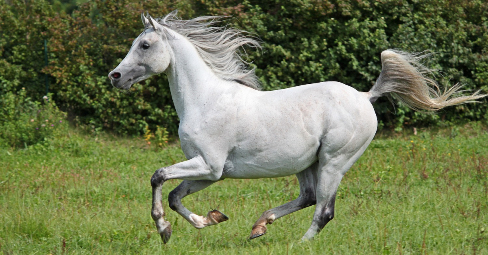
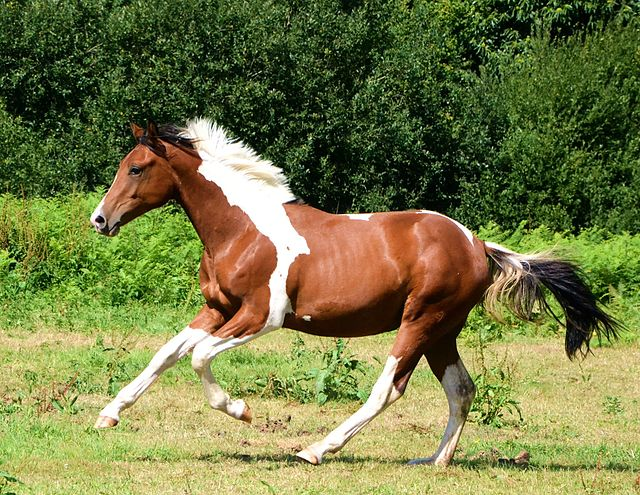
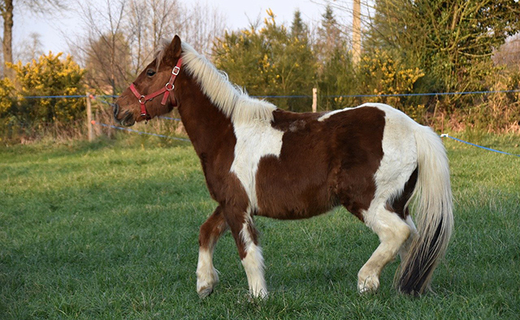

{{ po.nomPo}}
Description : C'est un poney très gentil et affectueux, il aime les caresses et les sorties en forêt. Il est idéal pour les enfants et les débutants.

Prénom : {{ po.nomPo }}
Description : C'est un poney très énergique et joueur, il aime les longues balades et les sauts d'obstacles. Il convient aux cavaliers expérimentés.

{{ po.nomPo}}
Description : C'est un poney très calme et sage, il aime les balades tranquilles et les petites courses. Il est idéal pour les cavaliers débutants.

{{ po.nomPo}}
Description : C'est un poney très calme et sage, il aime les balades tranquilles et les petites courses. Il est idéal pour les cavaliers débutants.
{% endfor %}